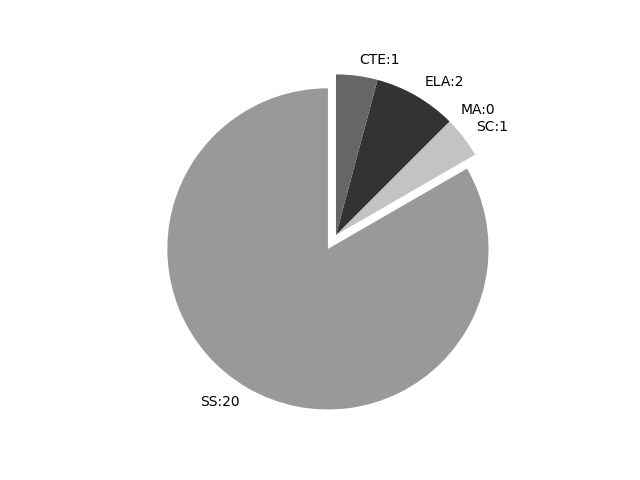

Nebraska
Report date: 2021-07-08
The frequency of all keywords found in this state's standards: 24
Comparable state score: 1.222 (median: .303, SD: .324)
The frequency above is the sum of all keywords found in all of this state's four core academic standards and the state's CTE/career standards. This total count is broken down by keyword and discipline area below.
On this site, 'comparable scores' are calculated as: keywords found divided by total words in the standards document(s) - multiplied by 100,000. The comparable scores attempt to normalize data, accounting for very different sizes of curriculum guidance documentation.
Frequencies by keyword or phrase:- spatial: 7
- Geographic Information System: 1
- geospatial: 13
- GIS: 3

Frequencies by discipline area: - SS: 20
(Comp: 62.28) - SC: 1
(Comp: 0.175) - MA: 0
(Comp: 0.0) - ELA: 2
(Comp: 0.402) - CTE: 1
(Comp: 0.198)
Support files: Examples of keyword use by discipline area (and document): - CTE
- 2017-AFNR-Standards-by-POS.pdf, page:15, position:249
structural requirements, specifications and estimate costs of structuresAFNR.HS.6.4.cFollow plans to construct, maintain, or repair AFNR structures.AFNR.HS.6.5.aApply geospatial technologies to solve problems and increase the e
- ELA
- 2014_Updated_ELA_Standards_Vertical_Version_k_12.pdf, page:39, position:1035
with explicit evidence from the text or additional sources. LA 7.1.6.j Apply knowledge of organizational patterns to comprehend informational text (e.g., sequencechronological, description, spatial, cause and effect, comparecontrast, factopinio - 2014_Updated_ELA_Standards_Vertical_Version_k_12.pdf, page:44, position:1047
with explicit evidence from the text or additional sources. LA 8.1.6.j Apply knowledge of organizational patterns to comprehend informational text (e.g., sequencechronological, description, spatial, cause and effect, comparecontrast, factopinio
- SC
- Nebraska_Science_Standards_Final_10_23.pdf, page:48, position:1569
and (3) developing logical and reasonable arguments based on evidence. Examples of behaviors could include fixed action patterns, imprinting, kinesis, taxis, hibernation, estivation, habituation, spatial learning, associative learning, cognition, foragi
- SS
- Nebraska-Social-Studies-Standards-Final-11-2019.pdf, page:4, position:249
of various groups.For example: scouts, sports, classrooms, familiesHistorySS K.3.4.b Identify places in the community where people may live.For example: farms, houses, apartmentsGeospatial Skills and Geo-literacySS K.3.5 Use geographic - Nebraska-Social-Studies-Standards-Final-11-2019.pdf, page:8, position:113
- Nebraska-Social-Studies-Standards-Final-11-2019.pdf, page:12, position:819
music, sportsSS 2.3.4.b Identify examples of cultural markers in the community. For example: religious or institutional structures, names of streets, types of businesses, buildingsGeospatial Skills and Geo-literacySS 2.3.5 Use geographi - Nebraska-Social-Studies-Standards-Final-11-2019.pdf, page:17, position:1039
example: languages, religions, foods, music, sportsSS 3.3.4.b Describe examples of how and why cultures change in a community.For example: technology, education, employment, migrationGeospatial Skills and Geo-literacySS 3.3.5 Use geographi - Nebraska-Social-Studies-Standards-Final-11-2019.pdf, page:21, position:1187
4.2.4.b Discuss how technology has affected the specialization of NebraskaÕs economy and surrounding states.For example: irrigation, agriculture and farm equipment, online trading, geospatial technology (GIS [Geographic Information System - Nebraska-Social-Studies-Standards-Final-11-2019.pdf, page:21, position:1209
how technology has affected the specialization of NebraskaÕs economy and surrounding states.For example: irrigation, agriculture and farm equipment, online trading, geospatial technology (GIS [Geographic Information Systems] and GPS [Gl - Nebraska-Social-Studies-Standards-Final-11-2019.pdf, page:23, position:742
celebrationsSS 4.3.4.b Compare and contrast population characteristics of the state of Nebraska.For example: density, distribution, growth rates due to available jobs, resourcesGeospatial Skills and Geo-literacySS 4.3.5 Use geographi - Nebraska-Social-Studies-Standards-Final-11-2019.pdf, page:29, position:262
5.3.4.c Explain reasons for historical and present day migrations to and within the United States.For example: economic opportunity, war, famine, natural disasters, persecutionGeospatial Skills and Geo-literacySS 5.3.5 Use geographi - Nebraska-Social-Studies-Standards-Final-11-2019.pdf, page:31, position:2968
understanding of the Earth and its peoples through the study of history, geography, politics, culture, and economic systems. Students examine the world by exploring the location, place, and spatial organization of the worldÕs ancient civilizations - Nebraska-Social-Studies-Standards-Final-11-2019.pdf, page:34, position:349
of peoplesettlements.For example: characteristics of river civilizationsSS 6.3.4.b Explain how cultural diffusion occurs.For example: trade routes, migration, conquestempire buildingGeospatial Skills and Geo-literacySS 6.3.5 Not addressed - Nebraska-Social-Studies-Standards-Final-11-2019.pdf, page:39, position:895
patterns of world events.For example: Use mapschartsdiagramstimelinesmapping technology to track and analyze historical changes over space and time(spread of religious groups, spatial connections through trade or political arrangeme - Nebraska-Social-Studies-Standards-Final-11-2019.pdf, page:39, position:470
education, etc.SS 7.3.4.b Develop a logical process to describe how cultural diffusion occurs and how the diffusion of ideas impacts cultures.For example: migration, conquering, tradeGeospatial Skills and Geo-literacySS 7.3.5 Compare issue - Nebraska-Social-Studies-Standards-Final-11-2019.pdf, page:44, position:612
utilized and adapted to their physical environment.For example: rivers, wetlands, forests, treeless plains, precipitation, droughtHistoryMovementSS 8.3.4 Not addressed at this levelGeospatial Skills and Geo-literacySS 8.3.5 Not addressed - Nebraska-Social-Studies-Standards-Final-11-2019.pdf, page:51, position:748
and quantity; research NAFTA andor Brexit.High School GeographySummaryTo succeed in an increasingly interconnected world, NebraskaÕs next generation of citizens will need to be ßuent in spatial knowledge. Geography at the high school level - Nebraska-Social-Studies-Standards-Final-11-2019.pdf, page:53, position:1630
planSS HS.3.5.b Analyze how geospatial skills and geo-literacy are applied to improve standards of living and solve problems.For example: Examine how geospatial technologies (such as GIS [Geographic Information Systems] and remote sen - Nebraska-Social-Studies-Standards-Final-11-2019.pdf, page:53, position:2215
sources for applications, credibility, and appropriateness in displaying spatial data.For example: use maps (paper, digital, and mental), atlases, Global Positioning System (GPS), Geographic Information Systems (GIS), remote sensing, and forms of quantitati - Nebraska-Social-Studies-Standards-Final-11-2019.pdf, page:53, position:1105
Heartland and Rimland Theory, demarcation of borders, territorial morphologyGeospatial Skills and Geo-literacySS HS.3.5 Evaluate issues andor events using geographic knowledge and geospatial skills to make informed decisions.SS HS.3.5. - Nebraska-Social-Studies-Standards-Final-11-2019.pdf, page:53, position:1814
(such as GIS [Geographic Information Systems] and remote sensing) and geographic knowledge (such as geopolitics) can be applied to better understand the world, address issues, and make spatial decisions (such as determining market potential, - Nebraska-Social-Studies-Standards-Final-11-2019.pdf, page:53, position:990
of membership in multinational organizations and agreements, treaties, resource and technology exchanges, Heartland and Rimland Theory, demarcation of borders, territorial morphologyGeospatial Skills and Geo-literacySS HS.3.5 Evaluate is - Nebraska-Social-Studies-Standards-Final-11-2019.pdf, page:53, position:2246
credibility, and appropriateness in displaying spatial data.For example: use maps (paper, digital, and mental), atlases, Global Positioning System (GPS), Geographic Information Systems (GIS), remote sensing, and forms of quantitativequa
{kind=link}